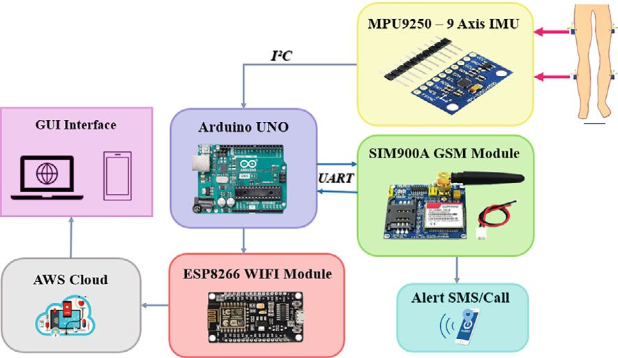
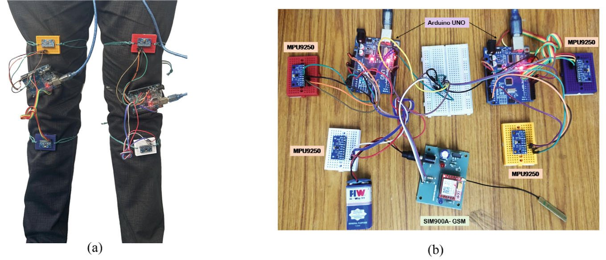
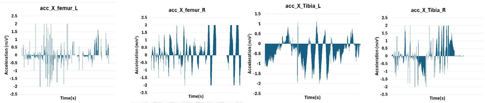
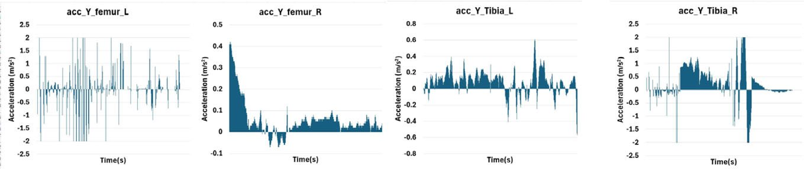
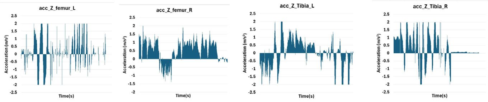
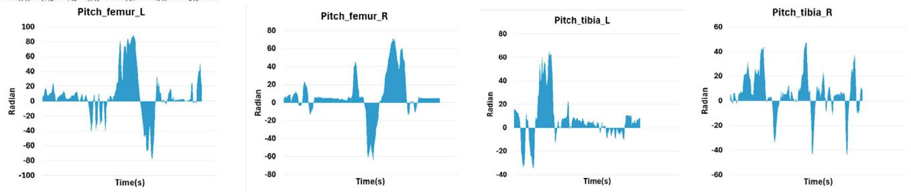
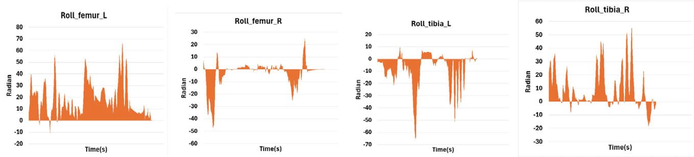
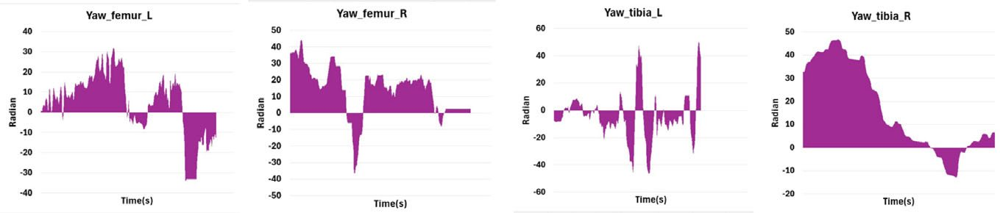

OverviewCatching knee OA early
Knee osteoarthritis wears down the cartilage of a weight-bearing joint. It is common in older adults and especially in women over 60, there is no single drug that reliably treats it, and by the time pain appears the damage is often advanced, which can end in an expensive and risky total knee replacement. Spotting changes in how someone walks, early, is one of the few practical ways to intervene sooner.
This project is a low-cost wearable that does that outside a gait lab. Inertial sensors strapped to the thigh and shin of both legs measure how the knee moves through every step. An Arduino works out the angles, follows the gait cycle, compares the knee angle with healthy limits and sends an alert to a phone when it moves outside them. Data also goes to the cloud for long-term tracking.
PROBLEMLimits of today’s diagnosis
- Clinical criteria for knee OA are only partly effective.
- There are no imaging biomarkers for early diagnosis.
- Insole and foot-pressure methods miss many movement patterns, especially in older people.
- Gait labs are expensive and not available for everyday monitoring.
APPROACHWhat this system offers
- Non-invasive and wearable, held on with Velcro straps.
- Continuous roll, pitch and yaw for both knees.
- Automatic alerts when angles or accelerations exceed healthy thresholds.
- Remote monitoring over GSM, plus cloud storage on AWS.
System architectureHow the wearable works

Sense
Four MPU9250 nine-axis IMUs sit on the femur and tibia of both legs, aligned with the mediolateral axis to capture rotation in the sagittal plane.
Compute angles
From the three-axis accelerometer, the Arduino UNO computes roll, pitch and yaw. Roll gives knee flexion and extension; pitch and yaw give the direction of knee rotation.
Segment the gait cycle
Roll data is overlaid on the periodic gait cycle, from heel strike to terminal swing, to extract step length, stride length, cadence, gait speed and stance and swing times.
Check thresholds
Pitch is held to about ±60° for the femur and ±40° for the tibia, and acceleration to about ±1.8 per axis. Going beyond them marks a notable change in knee angle.
Alert
A SIM900A GSM module sends an SMS or call to a chosen phone over GSM/GPRS.
Store and visualise
An ESP8266 pushes the processed data over MQTT to the AWS cloud for long-term storage and analysis, while a GUI shows it live.
Angle from accelerometer data, as used in the study (Eq. 1).
Experimental procedureWalking trials

- Nine participants in four age groups (20–30, 30–35, 40–45 and 50+) walked 30 m in a straight line at normal speed, then slowly.
- The sensors were calibrated before each trial to remove bias; each analysis session took about 3.5 minutes.
- Walking speed, step angle, step width and body tilt were varied, and subjects were coached to change step direction.
- Data was visualised live, stored in an Excel database and analysed for changes in the gait parameters.
- Knee motion was also recorded while climbing stairs and sitting.
Healthy rangesWhere healthy ends
Angle ranges for the knee joint
| Joint | Side | Pitch (θ) | Roll (ϕ) | Yaw (ψ) |
|---|---|---|---|---|
| Femur | Left / right | ±60° | ±50° | ±25° |
| Tibia | Left / right | ±50° | ±60° | ±45° |
Peak-acceleration thresholds
| Position | Side | Threshold X | Threshold Y | Threshold Z |
|---|---|---|---|---|
| Femur | Right | ±1.5 | ±1.8 | ±1.5 |
| Femur | Left | ±1.5 | ±1.8 | ±1.5 |
| Tibia | Right | ±2 | ±1.5 | ±1 |
| Tibia | Left | ±2 | ±1.5 | ±1 |
ResultsWhat the sensors saw
The system tracked gait features for all nine subjects and checked the derived parameters against standard values for healthy adults. Distinct signatures of the femur and tibia of each leg show up clearly in the acceleration and angle traces below, and readings that crossed a threshold triggered an alert to the phone in real time.






Next stepsTowards diagnosis
- Extend the study from healthy young adults to older people, who have a higher incidence of knee OA, with many more participants.
- Add machine learning to classify healthy and OA gait from the wearable data.
- Group OA patients by Kellgren-Lawrence grade for staged, personalised monitoring.
- Replace lab-based gait analysis with an everyday wearable for clinicians and patients.
Intellectual propertyProtected as an invention
Analysing Gait Angle Variations in Healthy Individuals and Knee Osteoarthritis Patients Utilizing Non-Invasive IMU Sensors
- Application no.
- 202541027916
- Filing date
- 25/03/2025
- Publication no.
- 17/2025
- Publication date
- 25/04/2025
Analyzing Gait Angle Variations in Healthy Individuals and Knee Osteoarthritis Patients Utilizing Non-invasive IMU Sensors
Madhavan Bharanidivya, Sayantan Panda, Samiappan Dhanalakshmi
Proceedings of the International Conference on Recent Trends in Computing, Lecture Notes in Networks and Systems 886, pp. 57–67 · Springer · doi:10.1007/978-981-97-8946-7_5
CreditsPeople and tools
Authors
Supported by the Government of India through the Visvesvaraya PhD Scheme Phase II, with research infrastructure from SRM Institute of Science and Technology.